Post-Training Robot Policies: Challenges, Problems and Open Questions
Robot foundation models copied the language-model recipe: start from a vision-language model, pretrain on broad robot data, then post-train for a task. Post-training is where most of a robot's task skill is actually learned, and it is harder than for language models because three things that are cheap there are expensive here: rollouts, rewards and action likelihoods. This review goes through the evidence for each, then for two quieter problems, forgetting and evaluation, and ends with the questions that are still open. The thread through all of them: post-training of language models scaled once it had cheap rollouts and an automatic verifier, and robotics has neither yet.
1. The recipe, and what post-training means here
Current vision-language-action (VLA) policies, such as π0, OpenVLA, GR00T N1 and Gemini Robotics, are built in three stages. A vision-language model trained on web data supplies the backbone. The model is pretrained on large, mixed robot datasets. Then it is post-trained for a particular task, robot or level of quality. In this review the policy is the network that commands the robot. Other learned models are named when they appear: a critic or value function, a reward model, a world model. Post-training changes the policy, or in a few methods adds a small policy next to a frozen one.
The π0 paper (Black et al.) states the division of labour clearly. The pretraining data should cover as many tasks and behaviours as possible, including mistakes and recoveries. The post-training data should show fluent, efficient execution of the target task. Training only on clean data never shows the policy how to recover, because clean data contains few mistakes; training only on messy data never shows it how to act efficiently. GR00T N1 draws the same idea as a pyramid (Figure 1): the higher the layer, the less data and the more specific it is to one robot.
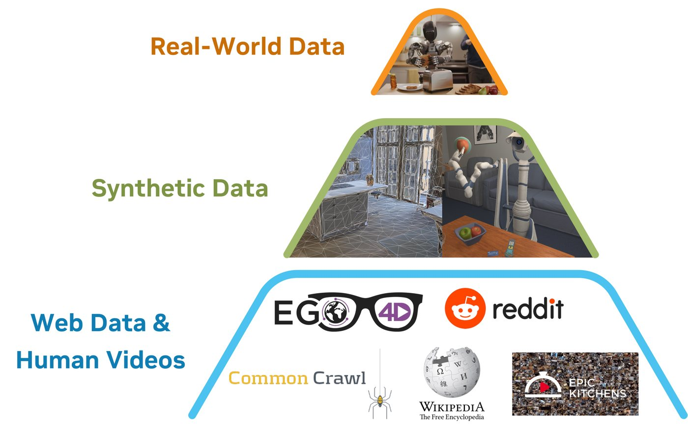
The scale matters for what follows. π0 was pretrained on about 10,000 hours of its own robot data plus the Open X-Embodiment collection (22 robots from 21 institutions). DROID adds 350 hours over 564 scenes, and OpenVLA trained on 970,000 demonstrations. That is large for robotics and small next to the trillions of tokens behind a language model. A consequence: robot post-training does more of the learning than its language-model namesake. Post-training a language model mostly brings out what pretraining already put there. A robot learning to fold a particular shirt on a particular arm is mostly learning the skill during post-training, from a good starting point.
The methods in use fall into a handful of families:
| Family | What changes | Examples |
|---|---|---|
| Fine-tuning on curated demos (SFT) | Policy weights | π0 task fine-tuning; OpenVLA-OFT; Gemini Robotics (new short tasks from as few as 100 demos) |
| Interactive imitation | Policy weights, from human corrections | DAgger, HG-DAgger, the interventions in Recap |
| Real-world RL | Policy weights, from the robot's own experience | SERL, HIL-SERL, PA-RL, ConRFT, π*0.6 with Recap |
| RL in simulation or a world model | Policy weights | DPPO, SimpleVLA-RL, RL4VLA, RIPT-VLA, VLA-RL, πRL, WMPO, VLA-RFT |
| A small policy beside a frozen one | A new small network only | ResiP (residual corrections), DSRL (RL in the noise space) |
| Steering at deployment | No weights; a critic or verifier picks actions | V-GPS, RoboMonkey |
| Distilling RL specialists | Policy weights, on RL-generated data | RLDG |
2. The imitation ceiling
Behaviour cloning can at best match its demonstrations, and teleoperated demonstrations are hesitant, slow and inconsistent between operators. RLDG (Xu et al.) tested what better data is worth. They trained a reinforcement learning specialist for each task, then fine-tuned OpenVLA and Octo on the specialists' rollouts instead of on human demonstrations. Success rose by up to 40% on precise connector insertion and assembly, and the policies generalised better to new tasks. The authors attribute the gain to two things: better coverage of states, and better actions. Figure 2 shows the second. At the same pose just before insertion, human actions scatter around zero, while RL actions sit in the corner of action space that points at the hole.
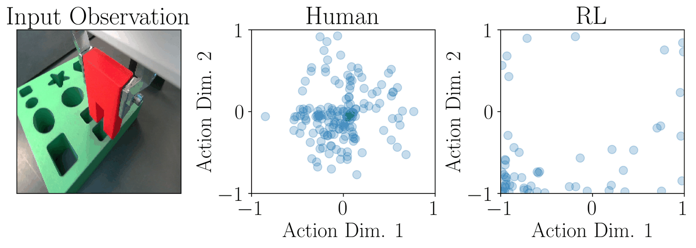
Precision is where the ceiling shows first. Ankile et al. (ResiP) found that on assembly tasks behaviour cloning saturates as demonstrations are added, for two reasons. The first is distribution shift from training on offline data. The second is action chunking: the policy predicts a chunk of future actions and executes it open-loop, so it behaves like a trajectory planner rather than a feedback controller. The failures are small misalignments (Figure 3), exactly what a small correction would fix. ResiP keeps the chunked policy frozen and trains a closed-loop residual policy on top with RL.
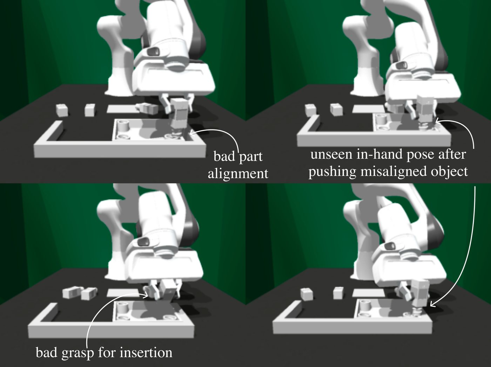
The older problem, compounding error, has an older fix. DAgger (Ross et al.) collects expert labels on the states the learner itself visits, so the training distribution follows the policy. HG-DAgger (Kelly et al.) lets the human take control when the robot drifts, and this is how most robot systems now gather corrections; Recap uses a form of it. Corrections carry a lot of information per sample, but they cost human attention for every robot-hour.
3. Experience is expensive
A real rollout takes minutes, needs a reset, wears the hardware, and one robot can run only one at a time. The real-world RL systems that work are best read as engineering around that cost. SERL (Luo et al.) learned PCB assembly, cable routing and object relocation in 25–50 minutes of training per policy. It combined sample-efficient off-policy RL, demonstrations, and tooling for computing rewards and resetting the scene. HIL-SERL (Figure 4) adds human interventions. A binary reward classifier is trained from teleoperated successes and failures, 20–30 demonstrations seed the buffer, and online RL runs with corrections that taper off as the policy improves. On tasks including dashboard installation and timing-belt assembly it reached near-perfect success within 1–2.5 hours of training. Against imitation baselines it averaged twice the success rate and 1.8 times faster execution.
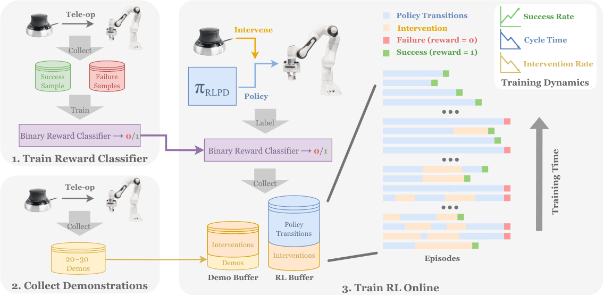
The same pattern holds for large VLAs:
- PA-RL fine-tuned OpenVLA autonomously with Cal-QL from 40% to 70% success in 40 minutes of real-world interaction.
- ConRFT reached 96.3% average success over eight tasks with 45–90 minutes of online fine-tuning, with interventions.
- π*0.6 with Recap more than doubled throughput and roughly halved the failure rate on the hardest tasks. It made espresso drinks for 13 hours straight and folded laundry in a new home for over two hours without interruption.
All of these systems share two features. Each is off-policy or offline-to-online and reuses demonstrations; on-policy PPO, the default for language models, wastes too many rollouts on a real robot. And each keeps a human in the loop for resets, labels or corrections. The price is hours of robot time and human attention per task, and it grows linearly with the number of tasks.
Simulation removes that price where the physics can be simulated. Locomotion policies train in minutes on one GPU (Rudin et al.) and transfer zero-shot to mud, snow and rubble (Lee et al.). Manipulation is harder to simulate: contact, deformable objects and photorealistic scenes are where simulators fall short. Learning to Adapt covers sim-to-real transfer in more detail.
4. There is no verifier
Reinforcement learning for language models took off with verifiable rewards: answers that can be checked, code that passes its tests (DeepSeek-R1). Robots have no unit test for "folded neatly". The options in use each trade generality against cost:
- A classifier on the final image. HIL-SERL uses one. It is accurate but needs labelled successes and failures for every task.
- Episode-level human labels. Recap asks only whether each episode succeeded and turns that label into a reward, so the value function predicts the negative number of steps left until success: $$r_t = \begin{cases} 0 & t = T \text{ and success} \\ -C_{\text{fail}} & t = T \text{ and failure} \\ -1 & \text{otherwise.} \end{cases}$$ This applies to any task, but a person has to judge every episode. Credit then has to be assigned over the whole episode, which at 10–50 Hz with action chunks means thousands of actions.
- Vision-language judges and progress estimators. SuccessVQA (Du et al.) treats success as visual question answering. GVL predicts progress zero-shot on more than 300 real tasks by having a VLM put shuffled frames back in order. VLAC is a process reward model that lifted four real tasks from about 30% to about 90% success within 200 episodes. ReWiND learns a language-conditioned reward from a small demonstration set plus Open X-Embodiment data.
The weak spot is out-of-distribution behaviour, and that is exactly where RL explores. Figure 5 shows ReWiND scoring a successful bimanual demonstration as if almost nothing happened. The authors attribute this to little bimanual data in Open X-Embodiment, occlusion and a poor camera angle. A reward model that is wrong where the policy explores will be exploited. On a robot that means physical reward hacking: an object placed so that the camera sees success.
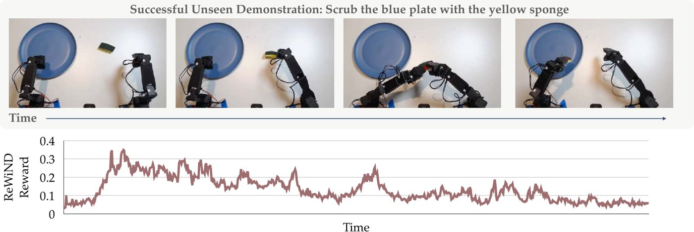
5. The action head fights the gradient
Policy-gradient methods need \(\log\pi(a\mid s)\). Modern VLAs output continuous action chunks from diffusion or flow-matching heads (Diffusion Policy, π0, GR00T N1), and those give no closed-form likelihood for a chunk. There are three ways around this.
Turn the sampler into an MDP. DPPO (Ren et al.) treats each denoising step as an action in an inner MDP nested inside the environment MDP (Figure 6). Each step is Gaussian, so its likelihood is tractable and PPO applies. The authors report structured exploration that stays on the data manifold, stable fine-tuning, and sim-to-real transfer on an assembly task.
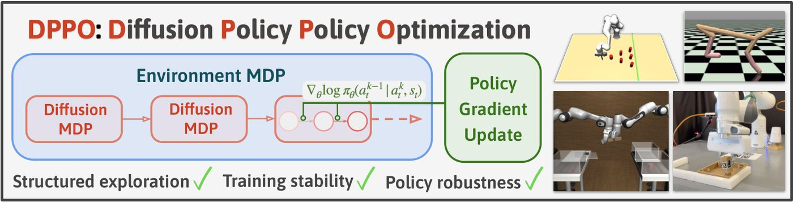
Flow-matching policies integrate a deterministic ODE, so noise has to be injected before any step has a likelihood. ReinFlow learns that noise. πRL (Chen et al.) does it for π0 and π0.5 in two ways (Figure 7). Flow-Noise adds a learnable noise network and computes the exact likelihood of the denoising chain,
$$\log \pi(\mathbf{A}\mid \mathbf{o}) = \log \pi(\mathbf{A}^{0}\mid \mathbf{o}) + \sum_{k=0}^{K-1} \log \pi\big(\mathbf{A}^{\tau_{k+1}} \mid \mathbf{A}^{\tau_k}, \mathbf{o}\big),$$while Flow-SDE converts the ODE into an SDE and treats denoising and acting as a two-layer MDP.
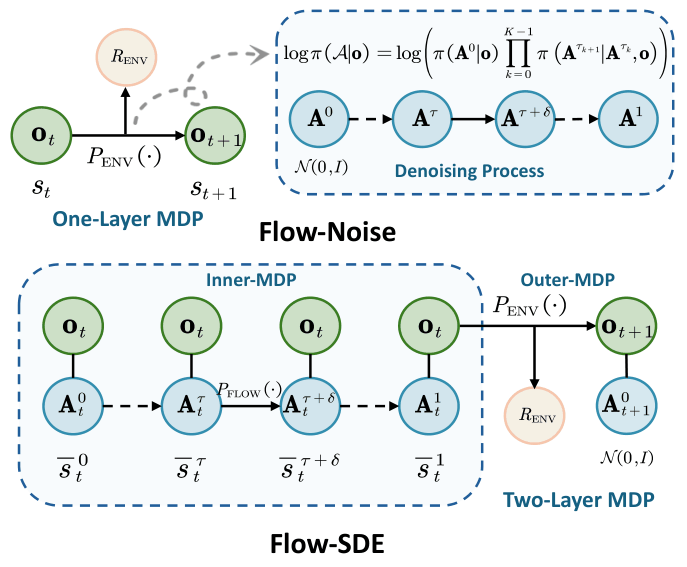
Avoid the likelihood. Several methods never compute it:
- DSRL (Wagenmaker et al.) runs RL over the latent noise fed into a frozen diffusion policy. It needs only black-box access to the policy.
- ResiP adds a small Gaussian residual policy on top of the frozen one.
- PA-RL samples candidate actions, re-ranks and refines them with a critic, then trains the policy on the best ones with an ordinary supervised loss. That works for diffusion and autoregressive policies alike.
- Recap conditions the policy on a binary indicator of whether the value function judged an action an improvement, trains with the usual imitation loss, and asks for the "improvement" behaviour at deployment. The paper notes that a PPO-style trust region was hard to enforce on the unbounded flow head, partly because new real-robot data cannot be collected every few gradient steps.
Leave the weights alone. RoboMonkey (Kwok et al.) samples several actions and lets a verifier choose (Figure 8). With a perfect verifier, action error falls as a power law in the number of samples across four VLAs. With a learned VLM verifier, success rose 25 points on out-of-distribution tasks and 9 points in distribution. V-GPS (Nakamoto et al.) instead re-ranks actions with a value function learned by offline RL, and improved five different generalist policies without touching their weights.
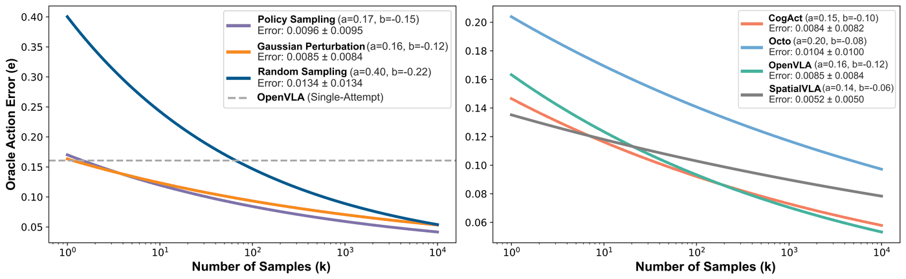
The catch is time. Every sample costs inference time, and a control loop has a deadline. When inference is slow, an action-chunking policy pauses or jerks at chunk boundaries. Real-time chunking (Black, Galliker and Levine) generates the next chunk while the current one runs: it freezes the actions that will execute anyway and inpaints the rest, and it stays robust with inference delays above 300 ms. Model size, sampling and verification all spend the same latency budget.
6. Fine-tuning forgets
VLAs inherit semantic knowledge from their vision-language backbone, and that knowledge is what lets them follow instructions they were never trained on. Post-training on robot data wears it away. In Figure 9 the original VLM answers a safety question, and the VLA fine-tuned from it answers with an action vector. Hancock et al. trace this to the mismatch between web pretraining data and robot data. Their fix, VLM2VLA, writes actions in natural language and trains only low-rank (LoRA) adapters. Driess et al. found something similar from the architecture side. Bolting a randomly initialised flow-matching action expert onto the backbone and backpropagating through both slows training and degrades language following. Their remedy, knowledge insulation, co-trains on VLM data, trains the backbone on discrete FAST action tokens, and stops the action expert's gradient from reaching the backbone.
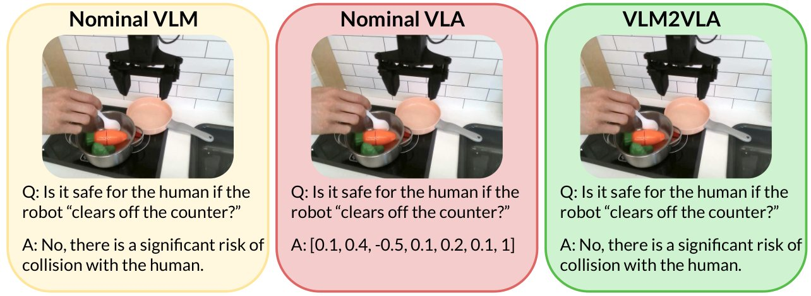
RL's Razor (Shenfeld, Pari and Agrawal) gives a general account (Figure 10). It covers language-model tasks and one robot task: OpenVLA-7B learning to pick up a can in SimplerEnv, with forgetting measured on drawer opening and closing. Across fine-tuning methods and hyperparameters, forgetting is predicted by the KL divergence from the base policy, measured only on the new task,
$$\mathbb{E}_{x\sim\tau}\Big[\mathrm{KL}\big(\pi_0(\cdot\mid x)\,\big\|\,\pi(\cdot\mid x)\big)\Big].$$With a binary reward, policy gradient converges to the optimal policy closest to the starting one, \(\pi^{\dagger} = \arg\min_{\pi \in P^{*}\cap\Pi} \mathrm{KL}(\pi\,\|\,\pi_0)\). SFT has no such bias and can end up arbitrarily far away. The deciding factor is the distribution the model is trained toward, not the algorithm: in a controlled toy setting, SFT on targets deliberately chosen to be KL-minimal forgot even less than RL did.
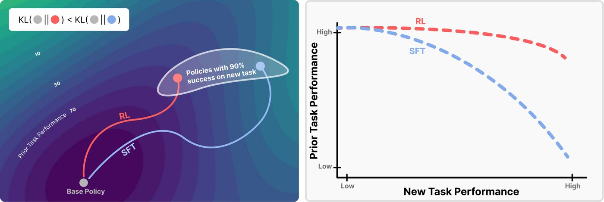
For robots the implication is uncomfortable. Human teleoperation sits far from the policy's own action distribution, so SFT on human demonstrations, the default way to post-train a VLA, forgets by construction. Shenfeld et al.'s follow-up, self-distillation fine-tuning (SDFT), learns from demonstrations on-policy: the model, conditioned on the demonstration, serves as its own teacher. That depends on in-context learning, which language models have and current VLAs largely do not.
7. Does RL teach new behaviour or sharpen old behaviour?
For language models, Yue et al. measured pass@k at large k and found that RL-trained models win at k = 1 while their base models win when many samples are allowed. In their analysis, what RL achieved was bounded by the base model; distillation from a stronger teacher, by contrast, did add new reasoning patterns.
The robot evidence is mixed in an interesting way. RL4VLA (Liu et al.) compared PPO with SFT for OpenVLA across vision, semantic and execution shifts (Figure 11). RL generalised much better on execution (unseen positions, initial poses, objects moved mid-episode), moderately better on semantics, and the same on vision.
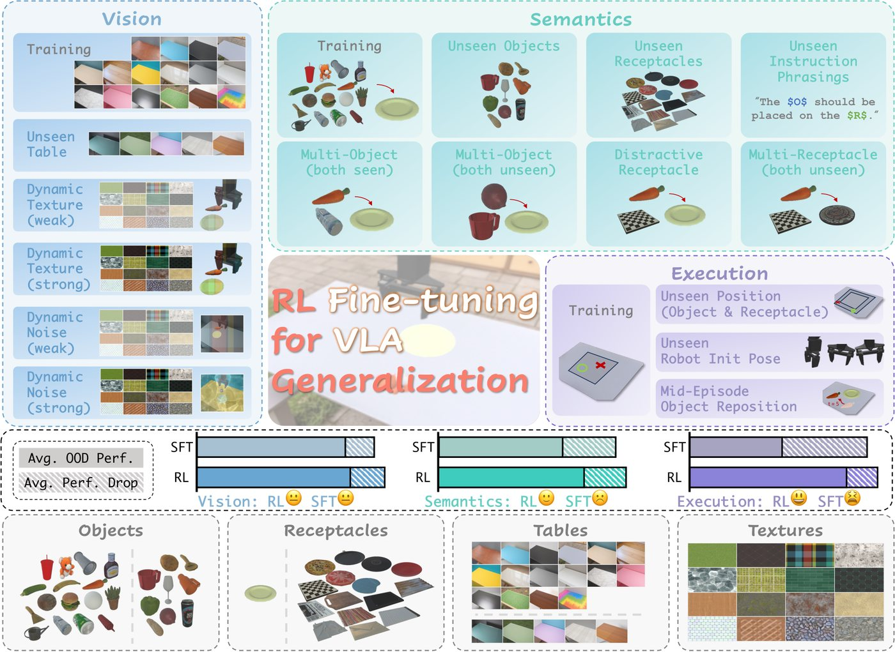
SimpleVLA-RL (Li et al.) reports "pushcut" (Figure 12): after RL, the policy pushes the can to the pot, where every demonstration grasped, moved and placed it. WMPO reports self-correction emerging in the same way.
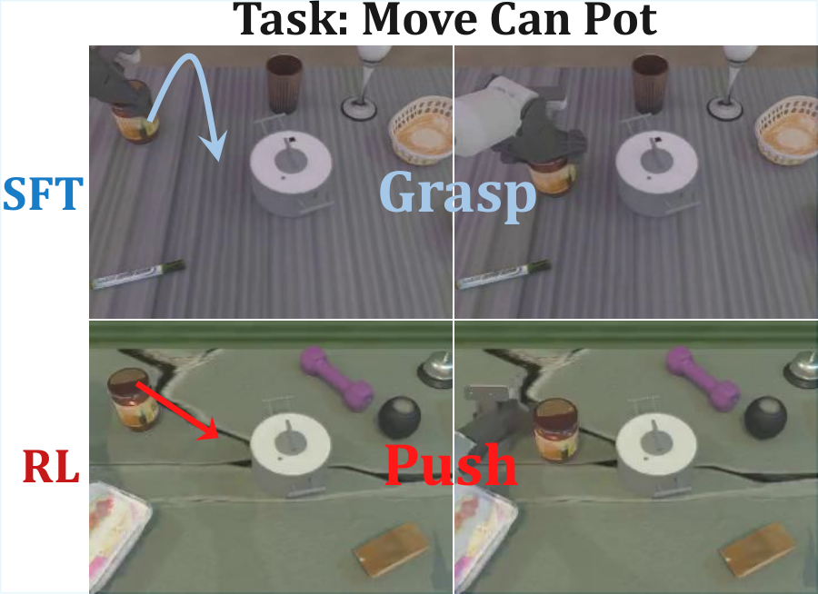
Success rates cannot tell us whether pushcut is new in Yue et al.'s sense. The base policy may already push now and then if sampled enough, and RL may simply have made that more likely. Settling it needs coverage measurements: sample the base policy many times and count how often it pushes. Robot papers rarely report them. In practice, sharpening may be the product anyway. The gap from 60% to 95% success, and cycle times faster than a teleoperator (HIL-SERL, Recap), are both sharpening.
8. Where rollouts come from: simulators and world models
RL in simulation works on VLA benchmarks, but the headroom has gone. On LIBERO, OpenVLA-OFT reaches 97.1% with SFT alone. RIPT-VLA takes it to 97.5%, and lifts a one-demonstration model from 4% to 97% in 15 iterations. Gains that close to the ceiling say little about the real world. SIMPLER (Li et al.) shows the more durable use of a simulator: with system identification and visual matching, its scores correlate strongly with real-world success, which makes it an evaluator rather than a training ground.
A learned world model is trained on real video and lets the policy act in imagination. As evaluators, WorldEval and Ctrl-World rank policies consistently with real-world results. Ctrl-World also generates successful imagined trajectories for fine-tuning, which raised success by 44.7%. As training grounds, VLA-RFT uses verified rewards inside a world model and beats supervised baselines in under 400 fine-tuning steps. WMPO runs on-policy GRPO in a pixel-space world model.
The failure mode is contact. Figure 13 is WMPO's own failure case: the imagined trajectory matches reality until the last frame, then misses the square jamming on the peg. RL optimises against the model's errors. A policy rewarded in imagination for an insertion that jams in reality learns the wrong thing, and contact events are short, rare in video data, and decisive for success.
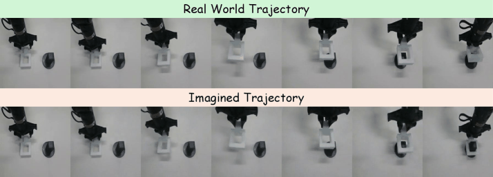
9. Evaluation decides what we believe
Real-world results usually rest on tens of trials. Kress-Gazit et al. give an example from their own evaluations (Figure 14). Policy A succeeded 15 times in 18 (83%) and policy B 11 times in 17 (65%). Treat each success probability as unknown with a uniform prior, so that \(p \sim \mathrm{Beta}(s+1, f+1)\) for \(s\) successes and \(f\) failures. Then the probability that B is actually the better policy is 11%. Holding both rates fixed, that probability falls to 4% at 30 trials each, 1% at 50 and 0.2% at 100 (my computation, by sampling). Many post-training comparisons report gaps smaller than 18 points on fewer trials.
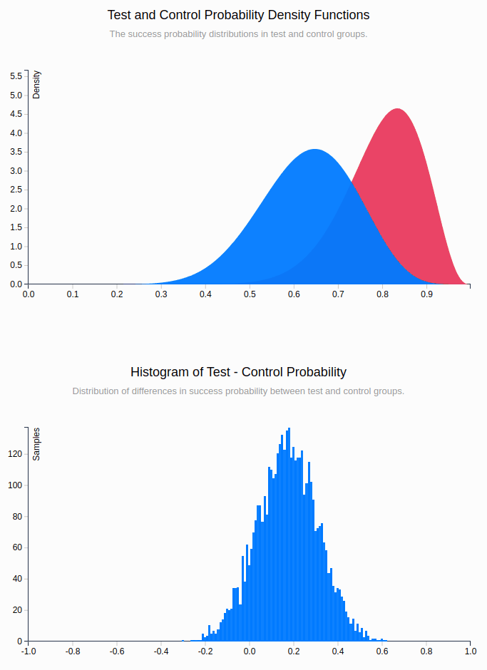
Infrastructure is improving. AutoEval runs real evaluations around the clock with automatic success detection and resets. SIMPLER and world-model evaluators cut the cost of ranking policies. The STAR-Gen taxonomy separates visual, semantic and behavioural generalisation, and using it found that open VLAs struggle with semantic generalisation despite their internet pretraining. Two gaps are specific to post-training and still rarely reported. One is what the policy lost: few papers re-measure the base model's abilities after fine-tuning, as RL's Razor does. The other is the human cost: intervention hours and resets, which are the true price of real-world RL.
10. Open questions
- How good must the base policy be? If on-policy RL can only reach solutions close in KL to the base policy, the base policy must already give success some probability. When it does not, the only option is SFT, with the forgetting that comes with it. Measuring the base policy's coverage of a task before choosing a post-training method is not yet standard practice.
- Can a policy keep learning without regressing? RL's Razor and SDFT point toward on-policy learning. Nobody has yet shown a VLA adding skills one after another for months while keeping the old ones.
- Is there a general robot reward model? Progress estimators work in distribution and fail on new embodiments and viewpoints (Figure 5). Something that does for robots what verifiers did for language models would change how far RL can scale.
- Which RL algorithm suits expressive policies? Likelihoods through the denoising chain (DPPO, πRL), RL in noise space (DSRL), residuals (ResiP), critic re-ranking (PA-RL) and advantage conditioning (Recap) all work somewhere. Head-to-head comparisons on the same real tasks are missing.
- Can RL run across many tasks at once? Language-model RL trains on thousands of environments together. Robot RL mostly trains one task at a time, a few at most. Whether hundreds of physical tasks interfere with each other is untested.
- Where should rollouts come from? Real fleets, simulators or world models. World models are already useful for ranking policies; for training they invite exploitation at contact (Figure 13).
- Inference compute or latency? Sampling and verification improve as a power law (Figure 8), while the control loop has a hard deadline. The best way to split a fixed latency budget between model size, samples and verification is unknown.
- Which layer should be post-trained? Hierarchical systems (Hi Robot) and embodied chain-of-thought (ECoT) put a language-level decision above the motor policy. RL on that layer resembles language-model RL and gets cleaner rewards; RL on the motor layer is the hard part.
- What should post-training data be? How much is needed, does it need to be on-policy, and should it come from humans or from RL specialists? RLDG shows that RL-generated data can beat human demonstrations.
- How can human attention per robot-hour be reduced? Interventions, resets and labels make real-world RL work, and their cost grows linearly with tasks and fleet size.
- Can evaluation be cheap and trustworthy? That includes reporting forgetting and human cost. Without it, none of the other questions gets a clean answer.
Most of these questions are the same problem seen from different sides. Post-training of language models took off once rollouts were cheap and rewards could be checked automatically. Robot post-training will scale with whatever substitutes for those two: better simulators or world models for the first, general reward models for the second. Until then, the human in the loop fills both gaps, and pays for them in hours.